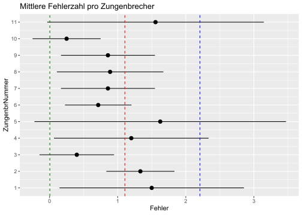
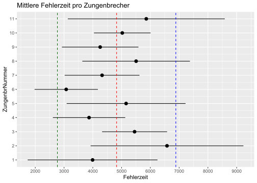
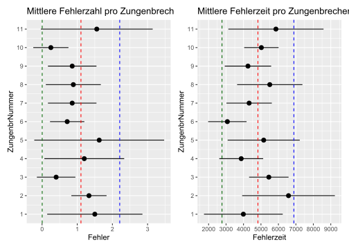
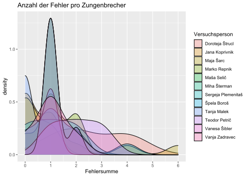
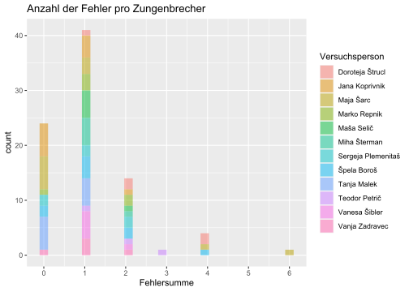
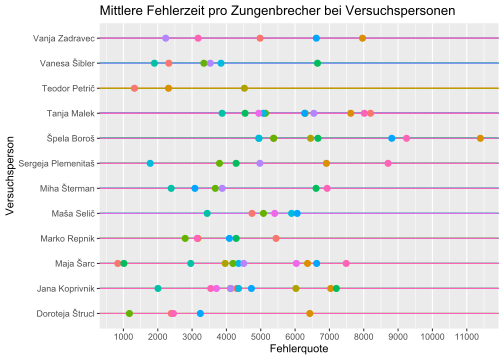
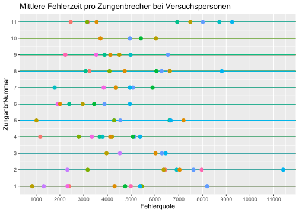
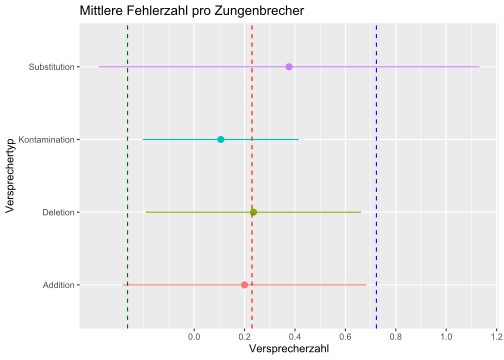

Kapitel 7 Deutsche Zungenbrecher
Ein Experiment mit Studierenden der Germanistik in Maribor:
- 11 deutsche Zungenbrecher (tongue twisters, lomilci jezika, besedna zavozlanka)
- Webadresse: https://www.youtube.com/watch?v=wuK_znJRKhU
7.1 Programme laden
library(tidyverse)
library(scales)
library(janitor)
library(readxl)
library(writexl)7.2 Tabelle laden
Wir laden die gemeinsame Google-Tabelle:
zungenbrecher = read_xlsx("data/Zungenbrecher.xlsx") %>%
mutate(across(where(is.numeric),
~ if_else(is.na(.), 0, as.numeric(.))))7.3 EDA
tabelle1 = zungenbrecher %>%
drop_na %>%
summarise(Fehler = mean(Fehlersumme),
Fehlerzeit = mean(Fehlerquote),
Fehler_sd = sd(Fehlersumme),
Fehlerzeit_sd = sd(Fehlerquote))
tabelle1## # A tibble: 1 x 4
## Fehler Fehlerzeit Fehler_sd Fehlerzeit_sd
## <dbl> <dbl> <dbl> <dbl>
## 1 1.11 4826. 1.10 2058.Im Durchschnitt etwa {Fehler} Versprecher pro Zungenbrecher.
Im Durchschnitt alle {Fehlerzeit} Millisekunden ein Versprecher.
Fehler_insgesamt = tabelle1$Fehler
Fehler_sd_insgesamt = tabelle1$Fehler_sd
p1 = zungenbrecher %>%
group_by(ZungenbrNummer) %>%
drop_na %>%
summarise(Fehler = mean(Fehlersumme),
Fehlerzeit = mean(Fehlerquote),
Fehler_sd = sd(Fehlersumme),
Fehlerzeit_sd = sd(Fehlerquote),
.groups = "keep") %>%
ggplot(aes(Fehler, ZungenbrNummer)) +
geom_pointrange(aes(xmin = Fehler - Fehler_sd,
xmax = Fehler + Fehler_sd)) +
geom_vline(xintercept = Fehler_insgesamt, lty = 2, color = "red") +
geom_vline(xintercept = Fehler_insgesamt + Fehler_sd_insgesamt,
lty = 2, color = "blue") +
geom_vline(xintercept = Fehler_insgesamt - Fehler_sd_insgesamt,
lty = 2, color = "darkgreen") +
scale_x_continuous(breaks = seq(0, 6, 1)) +
scale_y_continuous(breaks = seq(0, 11, 1)) +
theme(legend.position = "none") +
labs(title = "Mittlere Fehlerzahl pro Zungenbrecher")
ggsave("pictures/zungenbrecher_versprecherzahl.png")
p1
Fehlerzeit_insgesamt = tabelle1$Fehlerzeit
Fehlerzeit_sd_insgesamt = tabelle1$Fehlerzeit_sd
p2 = zungenbrecher %>%
group_by(ZungenbrNummer) %>%
drop_na %>%
summarise(Fehler = mean(Fehlersumme),
Fehlerzeit = mean(Fehlerquote),
Fehler_sd = sd(Fehlersumme),
Fehlerzeit_sd = sd(Fehlerquote),
.groups = "keep") %>%
ggplot(aes(Fehlerzeit, ZungenbrNummer)) +
geom_pointrange(aes(xmin = Fehlerzeit - Fehlerzeit_sd,
xmax = Fehlerzeit + Fehlerzeit_sd)) +
geom_vline(xintercept =
Fehlerzeit_insgesamt, lty = 2, color = "red") +
geom_vline(xintercept =
Fehlerzeit_insgesamt + Fehlerzeit_sd_insgesamt,
lty = 2, color = "blue") +
geom_vline(xintercept =
Fehlerzeit_insgesamt - Fehlerzeit_sd_insgesamt,
lty = 2, color = "darkgreen") +
scale_x_continuous(breaks = seq(0, 12000, 1000)) +
scale_y_continuous(breaks = seq(0, 11, 1)) +
theme(legend.position = "none") +
labs(title = "Mittlere Fehlerzeit pro Zungenbrecher")
ggsave("pictures/zungenbrecher_versprecherzeit.png")
p2
library(patchwork)
p1+p2
ggsave("pictures/zungenbrecher_patch1.png", width = 12, height = 7)zungenbrecher %>%
drop_na %>%
ggplot(aes(Fehlersumme, fill = Versuchsperson)) +
geom_density(alpha = 0.3) +
scale_x_continuous(breaks = seq(0, 6, 1)) +
labs(title = "Anzahl der Fehler pro Zungenbrecher")
zungenbrecher %>%
drop_na %>%
ggplot(aes(Fehlersumme, fill = Versuchsperson)) +
geom_histogram(alpha = 0.5) +
scale_x_continuous(breaks = seq(0, 6, 1)) +
labs(title = "Anzahl der Fehler pro Zungenbrecher")
ggsave("pictures/zungenbrecher_versprecherzahl_histogram.png")zungenbrecher %>%
drop_na %>%
ggplot(aes(Fehlerquote, Versuchsperson,
color = factor(ZungenbrNummer))) +
geom_pointrange(xmin = 0, xmax = 12000) +
scale_x_continuous(breaks = seq(0, 12000, 1000)) +
theme(legend.position = "none") +
labs(title = "Mittlere Fehlerzeit pro Zungenbrecher bei Versuchspersonen")
ggsave("pictures/zungenbrecher_versprecherzeit_personen.png")zungenbrecher %>%
group_by(ZungenbrNummer) %>%
drop_na %>%
ggplot(aes(Fehlerquote, ZungenbrNummer, color = Versuchsperson)) +
geom_pointrange(xmin = 0, xmax = 12000) +
scale_x_continuous(breaks = seq(0, 12000, 1000)) +
scale_y_continuous(breaks = seq(0, 11, 1)) +
theme(legend.position = "none") +
labs(title = "Mittlere Fehlerzeit pro Zungenbrecher bei Versuchspersonen")
ggsave("pictures/zungenbrecher_versprecherzeit_personen.png")tabelle2 = zungenbrecher %>%
drop_na %>%
pivot_longer(Addition:Kontamination,
names_to = "Versprechertyp",
values_to = "Fehlerzahl") %>%
group_by(Versprechertyp) %>%
summarise(Versprecherzahl = mean(Fehlerzahl),
Versprecherzahl_sd = sd(Fehlerzahl))
tabelle2## # A tibble: 4 x 3
## Versprechertyp Versprecherzahl Versprecherzahl_sd
## <chr> <dbl> <dbl>
## 1 Addition 0.2 0.483
## 2 Deletion 0.235 0.427
## 3 Kontamination 0.106 0.310
## 4 Substitution 0.376 0.756Versprecherzahl_insgesamt = mean(tabelle2$Versprecherzahl)
Versprecherzahl_sd_insgesamt = mean(tabelle2$Versprecherzahl_sd)
tabelle2 %>%
ggplot(aes(Versprecherzahl, Versprechertyp,
color = Versprechertyp)) +
geom_pointrange(aes(xmin = Versprecherzahl - Versprecherzahl_sd,
xmax = Versprecherzahl + Versprecherzahl_sd)) +
geom_vline(xintercept =
Versprecherzahl_insgesamt, lty = 2, color = "red") +
geom_vline(xintercept = Versprecherzahl_insgesamt +
Versprecherzahl_sd_insgesamt,
lty = 2, color = "blue") +
geom_vline(xintercept = Versprecherzahl_insgesamt -
Versprecherzahl_sd_insgesamt,
lty = 2, color = "darkgreen") +
scale_x_continuous(breaks = seq(0, 1.2, 0.2)) +
# scale_y_continuous(breaks = seq(0, 11, 1)) +
theme(legend.position = "none") +
labs(title = "Mittlere Fehlerzahl pro Zungenbrecher")
ggsave("pictures/zungenbrecher_versprecherzahl_errortype.png")## Saving 7 x 5 in image